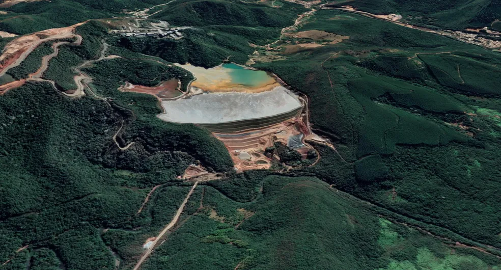

A preocupação com a preservação do meio ambiente tem se tornado cada vez mais relevante na sociedade atual. Nesse contexto, a implementação de projetos que promovam a sustentabilidade e a conservação dos recursos naturais é fundamental. Um exemplo notável é o projeto de uma empresa de gestão ambiental voltado para a construção e operação de uma barragem ecológica. Essa iniciativa visa conciliar a necessidade de geração de energia com a preservação dos ecossistemas locais, proporcionando benefícios ambientais, sociais e econômicos.

Havia uma empresa de gestão ambiental chamada EcoSolutions, dedicada a promover projetos sustentáveis e preservar o meio ambiente. Em busca de um novo desafio, decidiram empreender na construção de uma barragem ecológica, que visava equilibrar a geração de energia com a preservação dos ecossistemas locais.
A equipe da EcoSolutions começou o projeto com grande entusiasmo, ciente dos benefícios ambientais, sociais e econômicos que a barragem ecológica poderia trazer. No entanto, logo se depararam com uma série de desafios complexos.
O primeiro desafio enfrentado foi o planejamento detalhado e o estudo de impacto ambiental. A empresa precisava avaliar minuciosamente os possíveis impactos da barragem sobre a biodiversidade, os recursos hídricos e as comunidades locais. Foram necessárias pesquisas extensivas e consultas a especialistas para garantir que todas as precauções e medidas mitigadoras fossem consideradas.
Em seguida, a equipe de engenharia enfrentou o desafio de desenvolver um projeto que priorizasse a eficiência energética e a utilização de tecnologias limpas e renováveis. Foi um processo complexo, pois exigiu a integração de diferentes fontes de energia, como solar, eólica e hídrica. Além disso, a empresa teve que lidar com questões de escala e encontrar soluções sustentáveis para armazenar e distribuir a energia gerada.
A preservação dos ecossistemas foi outro desafio significativo. Durante a construção da barragem, a EcoSolutions enfrentou a tarefa de minimizar a interferência nos habitats naturais e proteger a vida aquática. Eles implementaram medidas rigorosas de controle de sedimentos e qualidade da água, além de criarem áreas de refúgio e corredores ecológicos para a proteção da fauna local. Foi um trabalho meticuloso, que exigiu o acompanhamento constante de biólogos e especialistas em conservação.
Após a construção, a empresa estabeleceu um programa abrangente de monitoramento ambiental. Isso envolvia análises regulares da qualidade da água, monitoramento da biodiversidade e avaliação contínua dos impactos da barragem. Essas informações eram cruciais para identificar possíveis problemas e aprimorar constantemente as práticas de gestão ambiental.
Ao longo da jornada, a EcoSolutions percebeu que o sucesso da barragem ecológica não se resumia apenas à sua construção. Era essencial envolver a comunidade local, fornecer treinamento e oportunidades de emprego, e garantir que os benefícios socioeconômicos fossem compartilhados de maneira justa. A empresa estabeleceu parcerias com organizações locais e promoveu programas de educação ambiental para conscientizar a população sobre a importância da sustentabilidade.
Embora tenham enfrentado uma série de desafios, a empresa nunca desistiu de sua visão de uma barragem ecológica. Com dedicação, perseverança e uma abordagem holística